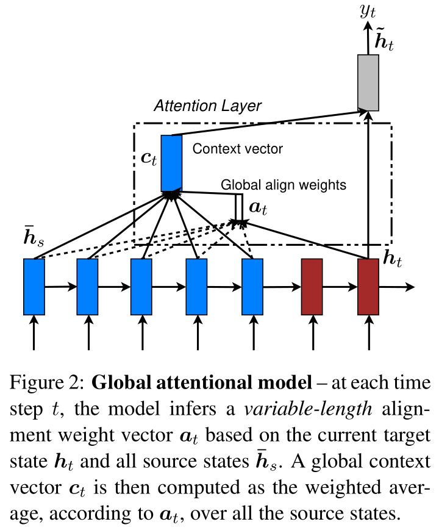
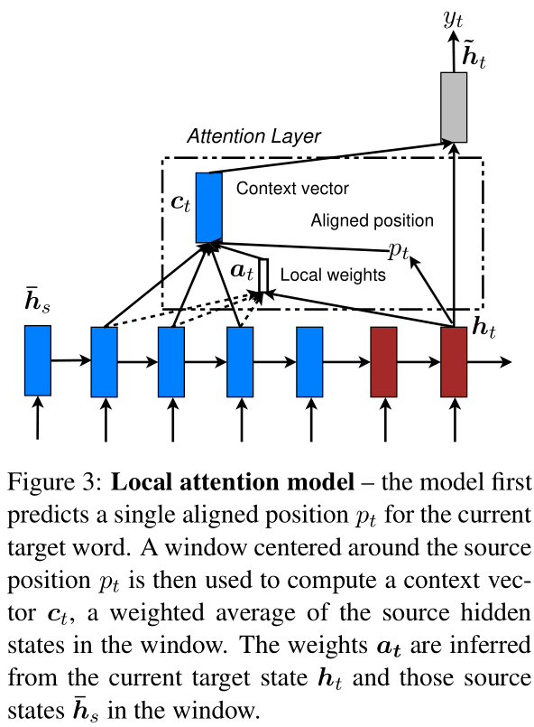
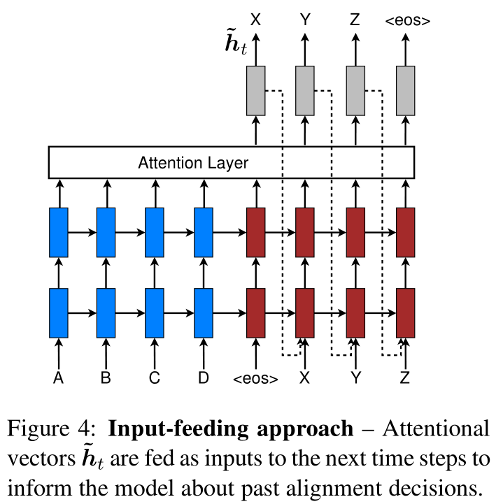

1. Attention-based Models
Our various attention-based models are classifed into two broad categories, global and local. These classes differ in terms of whether the “attention” is placed on all source positions or on only a few source positions. We illustrate these two modeltypes in Figure 2 and 3 respectively.
[success] global与local的区别
Common to these two types of models is the fact that at each time step t in the decoding phase, both approaches first take as input the hidden state ht at the top layer of a stacking LSTM. The goal is then to derive a context vector ct that captures relevant source-side information to help predict the current target word yt. While these models differ in how the context vectorct is derived, they share the same subsequent steps.
[success]
global和local的共同流程：
（1）从S-LSTM中取出
（2）基于生成
（3）基于预测输出
Specifically, given the target hidden state ht and the source-side context vector ct, we employ a simple concatenation layer to combine the information from both vectors to produce an attentional hidden state as follows:
The attentional vector is then fed through the softmax layer to produce the predictive distribution formulated as:
We now detail how each model type computesthe source-side context vector ct.
[success]
1.1. Global Attention
The idea of a global attentional model is to consider all the hidden states of the encoder when deriving the context vectorct. In this model type,a variable-length alignment vector at, whose size equals the number of time steps on the source side, is derived by comparing the current target hidden state ht with each source hidden state ̄:

Here,score is referred as acontent-based function for which we consider three different alternatives:
[success] 与越相似，分数越高
Besides, in our early attempts to build attention-based models, we use alocation-based function in which the alignment scores are computed from solely the target hidden state ht as follows:
Given the alignment vector as weights, the context vector ct is computed as the weighted average overall the source hidden states.6
[success] 是所有的加权平均，权即是
Comparison to (Bahdanau et al., 2015)– While our global attention approach is similar in spirit to the model proposed by Bahdanau et al. (2015),there are several key differences which reflect how we have both simplified and generalized from the original model. First, we simply use hidden states at the top LSTM layers in both theencoder and decoder as illustrated in Figure 2.Bahdanau et al. (2015), on the other hand, use the concatenation of the forward and backward source hidden states in the bi-directional encoder and target hidden states in their non-stacking uni-directional decoder.
[success]
本文与Bahdanau的区别一：
本文：使用S-LSTM得到的h_t
Bahdanau：使用双向LSTM的拼接
Second, our computation path is simpler; we go from then make a prediction as detailed in Eq. (5),Eq. (6), and Figure 2. On the other hand, at any timet, Bahdanau et al. (2015) build from the previous hidden state , which, in turn, goes through a deep-output and a maxout layer before making predictions.7
[success] 本文与Bahdanau的区别二，不是太懂
Lastly, Bahdanau et al. (2015) only experimented with one alignment function, the concat product; whereas we show later that the other alternatives are better.
[success] 本文与Bahdanau的区别三，alignmnet的尝试
1.2. Local Attention
The global attention has a drawback that it has toattend to all words on the source side for each target word, which is expensive and can potentially render it impractical to translate longer sequences,e.g., paragraphs or documents.
[success] global的缺点：计算量大
To address this deficiency, we propose a local attentional mechanism that chooses to focus only on a small subset of the source positions per target word.
[info] To address this：针对这个
This model takes inspiration from the tradeoff between the soft and hard attentional models proposed by Xu et al. (2015) to tackle the image caption generation task.
[info] caption：标题
In their work, soft attention refers to the global attention approach in whichweights are placed “softly” over all patches in the source image.
[success]
soft的特点：类似global，所有patch都参与预测，每个patch的weight都是soft的
The hard attention, on the other hand, selects one patch of the image to attend to at a time. While less expensive at inference time, the hard attention model is non-differentiable and requires more complicated techniques such as variance reduction or reinforcement learning to train.
[success]
non-differentiable：不可微分的
variance reduction：方差缩减
hard的特点：每次一个patch参与预测，需要其它技术手段辅助。
Our local attention mechanism selectively focuses on a small window of context and is differentiable.
[info]
selectively：有选择地
differentiable：可微分地
This approach has an advantage of avoiding the expensive computation incurred in the soft attention and at the same time, is easier to trainthan the hard attention approach.
[success]
优点：
（1）不像soft那样需要辅助技术
（2）没有hard那么大的计算量
In concrete details, the model first generates an aligned position pt for each target word at time t.
[info] In concrete details：具体而言
The context vector ct is then derived as a weighted average overthe set of source hidden states within the window[pt-D, pt+D];D is empirically selected.8
[success]
（1）生成aligned position pt
（2）基于[pt-D, pt+D]生成ct
Unlike the global approach, the local alignment vectorat is now fixed-dimensional, i.e.,. We consider two variants of the model as below.

Monotonic alignment (local-m) – we simply set pt=t assuming that source and target sequences are roughly monotonically aligned.
[info] monotonically：单调地
The alignment vector at is defined according to Eq. (7).9
Predictive alignment (local-p) – instead of assuming monotonic alignments, our model predicts an aligned position as follows:
and are the model parameters which will be learned to predict positions.S is the source sentence length. As a result of sigmoid, pt∈[0, S].To favor alignment points near pt, we place a Gaussian distribution centered around pt. Specifically, our alignment weights are now defined as:
We use the same align function as in Eq. (7) and the standard deviation is empirically set as .
[info] standard deviation：标准差
Note that pt is a real nummber; whereas s is an integer within the window centered at pt.10
Comparison to (Gregor et al., 2015)– have proposed a selective attention mechanism, very similar to our local attention, for the image generation task.
[info] selective attention：选择性注意
Their approach allows the model to select an image patch of varying location and zoom. We, instead, use the same “zoom” for all target positions, which greatly simplifies the formulation and still achieves good performance.
1.3. Input-feeding Approach
In our proposed global and local approaches,the attentional decisions are made independently,which is suboptimal.
[success]
suboptimal：次优的
每一次把注意力放在哪里都是独立的。
Whereas, in standard MT,a coverage set is often maintained during the translation process to keep track of which source words have been translated.
[info]
coverage set：覆盖集
keep track of：记录
Likewise, in attentional NMTs, alignment decisions should be made jointly taking into account past alignment information.
[info] 同样地
To address that, we propose an input-feeding approach in which attentional vectors are concatenated with inputs at the next time steps as illustrated in Figure 4.11
[success]
这一次的注意力位置应该与之前的注意力位置有关联。t-1时刻的注意力向量也作为t时间的输入。

The effects of having such connections are two-fold: (a) we hope to make the model fully aware of previous alignment choices and (b) we create a very deep network spanning both horizontally and vertically.
[success]
a是目的，b算是副作用吧？
Comparison to other work–Bahdanau et al. (2015) use context vectors,similar to our ct, in building subsequent hidden states, which can also achieve the “coverage” effect. However, there has not been any analysis of whether such connections are useful as done in this work. Also, our approach is more general;as illustrated in Figure 4, it can be applied to general stacking recurrent architectures, including non-attentional models.
[warning]
[?] 为什么要特意提到S-RNN？
[?] 针对attention的改进，对non-attention有什么用？
Xu et al. (2015) propose a doubly attentional approach with an additional constraint added to the training objective to make sure the model pays equal attention to all parts of the image during the caption generation process. Such a constraint can also be useful to capture the coverage set effect in NMT that we mentioned earlier. However, we chose to use the input-feeding approach since it provides flexibility for the model to decide on any attentional constraints it deems suitable.
[success]
deem：认为
additional constraint和input-feeding的目的都是coverage set。后者比前者更灵活。